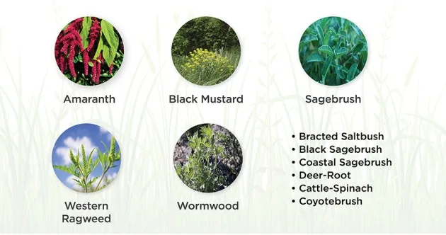
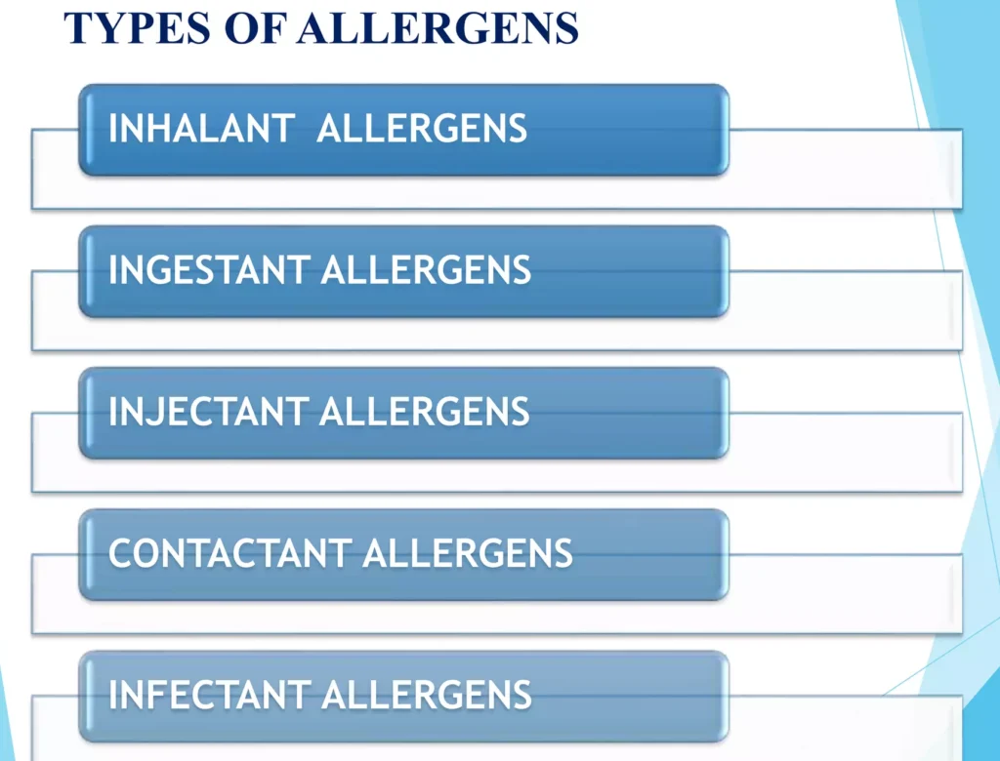
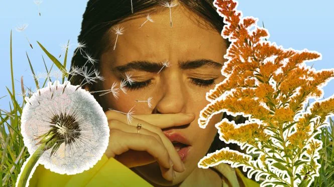

Expanded Nursing Uganda Explanation
Plant allergies should be understood beyond a short definition. Link the concept to patient history, focused assessment, common risks, nursing priorities, documentation and evaluation of outcomes.
01 PLANT ALLERGIES
These allergies are a common type of allergic rhinitis, which is characterized by symptoms such as sneezing, runny or stuffy nose, itchy or watery eyes, and nasal congestion.
02 Causes and Triggers of Plant Allergies:
- Pollen : Pollen is a common trigger for plant allergies. It is a fine powder produced by trees, flowers, grasses, and weeds to fertilize other plants of the same species. When people with pollen allergies breathe in pollen, their immune system mistakenly identifies it as a harmful intruder and produces chemicals, such as histamine, leading to allergic reactions.
- Trees : Certain trees can trigger plant allergies due to the release of pollen. Common ones include Pine trees, Palm trees, Cypress, sycamore and oak trees. Oak pollen stays in the air for longer periods, causing severe allergic reactions in some individuals.
- Grass : Grass pollen is a primary trigger for allergies such as perennial rye, Bermuda grass, and bluegrass are capable of triggering allergies.
- Weeds : Weeds, particularly ragweed plants, are known to cause allergies. Ragweed can produce a large number of pollen grains. Other weeds include Amaranth (pigweed)
- Other Plants : While pollen is the most common trigger for plant allergies, other plants can also cause allergic reactions. Some individuals may be allergic to specific plants such as juniper, nettle, sagebrush, tumbleweed, lamb’s quarters, walnut, English plantain, pine, cottonwood, and ordinary sunflowers.
03 Classification of Plant Allergens
Plant allergens can be classified into different categories based on the route of exposure and the symptoms they cause. The main categories of plant allergens include inhalant allergens, ingestant allergens, injectant allergens, contactant allergens, and infectant allergens.
Inhalant Allergens:
- Inhalant allergens are substances that are distributed in the atmosphere and come into contact with the nasal or buccal mucosa during respiration. These allergens can cause symptoms such as sneezing, runny or clogged nose, coughing, itching eyes, nose, and throat, sinusitis, hay fever, and asthma.
- Seasonal Hay Fever or Pollinosis: This type of hay fever is related to the release of pollen grains from certain plants during specific seasons of the year.
- Non-seasonal Hay Fever or Perennial Rhinitis : In this case, the allergic symptoms can occur throughout the year without regularity and are caused by inhalant allergens other than pollen grains, such as fungus spores and dust.
- Examples of responsible plant allergens : Pollens of oak, walnut, ragweed, Russian thistle, Bermuda grass, Parthenium grass, fungal spores, old plant parts, volatile oils, alfalfa, lemon, strong perfumes, and cotton pillowcases.
Ingestant Allergens:
- Ingestant allergens are substances found in food that are swallowed and can stimulate an allergic response . These allergens can cause symptoms such as gastrointestinal disturbances, vomiting, nausea, migraine pains, dermatitis, puffed lips and tongue, rhinitis, bronchial asthma, and severe cases of eczema of hands.
- Examples of ingestant allergens : Cow’s milk, orange juice, cod liver oil, coffee, flavoring agents, and preservatives.
Injectant Allergens:
- Injectant allergens refer to substances that cause allergy in hypersensitive individuals through injection . Common examples include antibiotics like penicillin and cephalosporin.
- Symptoms of injectant allergy: Itching of the hands and soles of the feet, erythema (redness of the skin) with severe pain, and peeling of the skin.
Contactant Allergens:
- Contactant allergens are substances that come into direct contact with the epithelium, causing allergic symptoms. These symptoms can include watery blisters and dermatitis.
- Examples of contactant allergens : Poison ivy, poison oak, grasses like parthenium and asparagus, buckwheat, gingko, lobelia tobacco, podophyllum, perfumes, soaps, detergents, nail polishes, hair dyes, and wool in clothing.
Infectant Allergens:
- Infectant allergens are bacterial metabolic wastes or products released by living organisms during their metabolism in the human body . These allergens can cause chronic illnesses and allergic reactions.
- Examples of infectant allergens : Certain types of bacteria, protozoans, molds, helminths, and other parasitic forms.
04 Signs and Symptoms of Plant Allergies:
Plant allergies can cause a range of symptoms, both when there is direct skin contact with the plant and when the allergens are inhaled.
Skin Contact Symptoms:
- Red rash : A red rash may develop on the skin within a few days of contact with a plant allergen.
- Bumps, red patches, or streaking : These may appear on the skin and can be accompanied by weeping blisters. It’s important to note that the fluids in the blisters will not cause the blisters to spread on you or to others.
- Swelling : Swelling of the affected area may occur.
- Itching : Itching is a common symptom associated with plant allergies.
Respiratory Symptoms:
- Sneezing : Frequent sneezing may occur as a result of inhaling plant allergens.
- Stuffy or runny nose : The nose may become congested or produce excessive mucus.
- Watery or itchy eyes : Allergens can cause the eyes to water or become itchy.
- Coughing : A persistent cough may develop.
- Wheezing or shortness of breath : Some individuals may experience wheezing or difficulty breathing.
- Chest tightness : A feeling of tightness or discomfort in the chest may be present.
General Symptoms:
- Fatigue : Allergies can cause fatigue or a feeling of low energy.
- Headache : Headaches may occur as a result of the allergic reaction.
- Sinus pressure : Pressure or pain in the sinuses can be a symptom of plant allergies.
- Postnasal drip : Excess mucus can drip down the back of the throat, causing irritation.
- Sore throat : A sore throat may develop due to postnasal drip or inflammation.
Seek immediate medical attention:
- You have symptoms of a severe reaction, such as severe swelling and/or difficulty breathing.
- The rash covers more than one quarter of your body.
- The rash occurs on the face, lips, eyes, or genitals.
- The initial treatment does not relieve symptoms.
- You develop a fever and/or the rash shows signs of infection, such as increased tenderness, pus or yellow fluid oozing from the blisters, and an odor coming from the blister
05 Diagnosis and Investigations
Personal and Medical History:
- Through assessment about your symptoms, their duration, and any potential triggers, exposure to plants, such as gardening or outdoor activities.
- Family history of allergies and any previous allergic reactions will also be considered.
Physical Examination:
- Close examination of the ears, eyes, nose, throat, chest, and skin.
- A lung function test may be performed to assess the respiratory function.
- In some cases, an X-ray of the lungs or sinuses may be necessary.
Skin Tests:
- Skin tests are the most common and reliable method for diagnosing plant allergies.
- Skin prick tests involve placing a small amount of allergen extract on your skin and then pricking or scratching the area.
- If you are allergic to the specific plant allergen, you will develop a raised bump or hive at the test site within 15 minutes.
- Intradermal tests may also be performed, where a small amount of allergen is injected just under the skin. This type of testing is more sensitive than skin prick tests.
Blood Tests:
- Blood tests, such as the RAST (radioallergosorbent test) or ELISA (enzyme-linked immunosorbent assay), measure the presence of specific IgE antibodies to plant allergens in your blood.
- The tests are used when skin testing cannot be performed, such as in cases of severe skin conditions or recent severe allergic reactions.
- Blood tests may take longer to get results and may be more expensive than skin testing.
Challenge Tests:
- Challenge tests involve supervised exposure to a small amount of the suspected allergen, either by ingestion or inhalation.
- This test is closely monitored by an allergist to observe any allergic reactions.
- Challenge tests are used for diagnosing food or medication allergies when the risk of a severe reaction is low.
06 Management of Plant Allergies
Plant allergies, such as pollen allergies, can cause symptoms like sneezing, runny nose, itchy eyes, and congestion. Managing plant allergies involves a combination of first aid measures, medical treatments, nursing care, and general measures to minimize exposure to allergens.
First Aid Measures:
- Remove yourself from the source of allergens, if possible.
- Rinse your nasal passages with a saline (saltwater) nose rinse to flush out allergens.
- Use over-the-counter antihistamine eye drops to relieve eye allergy symptoms.
- Apply cold compresses to reduce eye swelling and itching.
- Remove your clothes and wash all exposed areas with cool running water using soap and water.
- Wash clothing and all gardening tools, camping gear, sports equipment, and other objects that came into contact with the plants.
- Bathe pets exposed to the plants.
Medical Treatments:
- Antihistamines : Take oral antihistamines to relieve sneezing, itching, and runny nose.
- Nasal Sprays: Corticosteroid nasal sprays can reduce nasal inflammation and congestion.
- Decongestants : Short-term use of decongestants can help relieve nasal stuffiness.
- Leukotriene Modifiers : These medications can block chemicals released during an allergic reaction.
- Topical preparations such as calamine or topical steroids are helpful in treating a poison ivy rash.
- Allergy Shots (Immunotherapy) : In severe cases, allergy shots are used to desensitize the immune system to specific allergens. It’s good for longterm management.
Nursing Care:
- Educate patients about their specific allergens and how to avoid them.
- Teach proper use of nasal sprays and eye drops.
- Monitor and document symptoms and response to treatment.
- Provide emotional support and reassurance to patients experiencing allergy symptoms.
General Measures to Minimize Exposure:
- Stay indoors during peak pollen times, usually early morning and evening.
- Keep windows closed and use air conditioning with HEPA filters.
- Avoid outdoor activities on windy days when pollen counts are high.
- Wear sunglasses to protect your eyes from pollen.
- Wash your hands and face after being outdoors to remove pollen.
- Dry clothes indoors to prevent pollen from sticking to them.
- Avoid mowing lawns or being around freshly cut grass.
- Consider using a pollen mask when working outdoors.
07 Nursing Uganda Clinical Lens
Use Plant allergies as a practical nursing topic, not only a memorized definition. Adapt assessment and care to age, weight, development, caregiver knowledge and family support.
- What to understand first: define plant allergies, identify the normal or expected pattern, then explain what changes when the patient is unwell.
- Why it matters in care: the nurse must recognize risk early, explain findings clearly, document accurately and know when to escalate.
- How to revise it: connect each point to assessment, nursing diagnosis or care problem, intervention, rationale and evaluation.
08 Assessment Guide
- Airway, breathing, circulation, hydration, temperature, feeding, activity and danger signs.
- Weight-based medicines, immunization status, growth, development and caregiver concerns.
- Signs that may be subtle in children, including lethargy, poor feeding, fast breathing or convulsions.
09 Nursing Priorities, Rationales and Outcomes
- Use age-appropriate communication and involve the caregiver.
- Prevent dehydration, hypothermia, medication errors and delayed referral.
- Teach home care, danger signs and follow-up clearly.
The rationale for these priorities is patient safety: nursing actions should prevent deterioration, reduce discomfort, support recovery and create clear evidence for the next caregiver.
- Expected outcome: The child is clinically improving, caregiver instructions are understood and follow-up is arranged.
10 Patient Teaching and Revision Check
- Explain plant allergies in simple language the patient or caregiver can repeat back.
- Teach warning signs, medicine or follow-up instructions, hygiene or lifestyle points where relevant.
- For exams, prepare a short answer using: definition, causes or risk factors, signs, assessment, management, complications and prevention.
- For ward practice, document baseline findings, actions taken, patient response and the plan for review.
Illustrations and Diagrams (6)



Related Video Lectures
Watch nursing lecture videos on YouTube for this topic. Opens in a new tab.
Watch on YouTubeExternal link: YouTube may use its own cookies and terms. Nursing Uganda is not affiliated with YouTube.